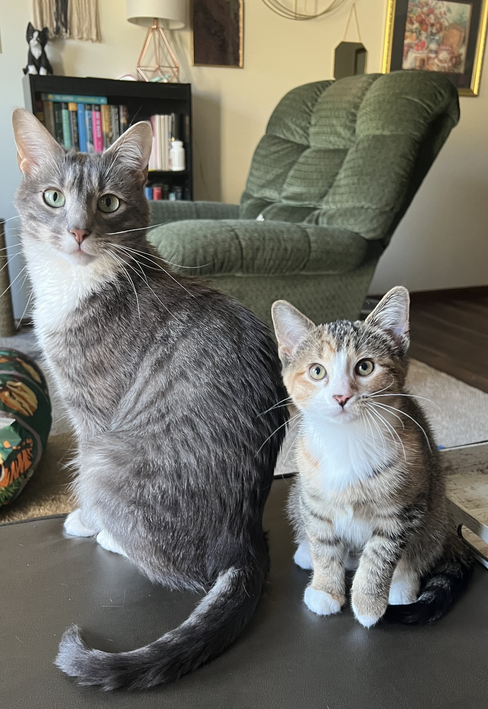

This website will house materials created and collected throughout this class. This website is currently under construction.
All materials featured on this website have been pulled from One More Voice.
Please enjoy the following image while the site is being developed.
